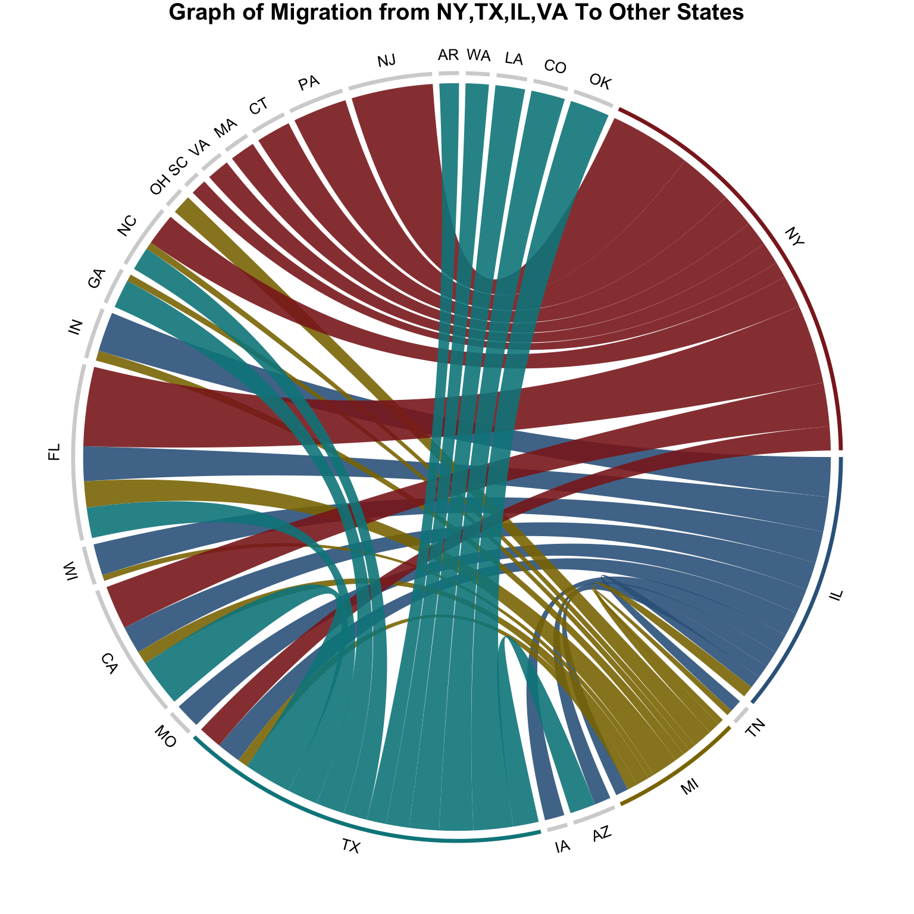

library(tidyr)
library(dplyr)
library(data.table)
library(tibble)
library(circlize)
excel.data <- readxl::read_excel("data/State_to_State_Migrations_Table_2018.xls",skip = 4,n_max=3, col_names = FALSE) # load original data set
excel.data <- data.frame(t(rbind(excel.data,colnames(excel.data)))) %>% filter(!is.na(X2)&X3=="Estimate")
excel.data <- excel.data %>% slice(c(2:52,54)) # select useful col only
col.names <- excel.data%>%.$X4 %>%as.vector # select useful col index
col.names <- append(col.names,"...1",0)
df <- readxl::read_excel("data/State_to_State_Migrations_Table_2018.xls",skip = 4,col_names = FALSE) # load the orginal dataset
df <- df %>% select(col.names)%>%setnames(old = as.vector(excel.data$X4), as.vector(excel.data$X2)) %>%drop_na("...1") %>%filter( ...1 != "Current residence in")%>%slice(2:53) %>%column_to_rownames('...1') # clean df
df[df == "N/A"] = 0
df <- data.frame(reshape2::melt(as.matrix(df), value.name = "migrant", varnames=c('destination', 'origin')))
df$migrant <- as.numeric(as.character(df$migrant))
df <- df[df$origin %in% c("New York","Texas","Illinois","Michigan"),]
migra.data <- df%>%group_by(origin)%>%arrange(migrant,.by_group=TRUE)%>% top_n(10) # select top 10 destination states
# final dataframe
## convert state name to its abbreviation and reorder the columns
migra.data$destination <- state.abb[match(migra.data$destination, state.name)]
migra.data$origin <- state.abb[match(migra.data$origin, state.name)]
migra.data <- migra.data[,c("origin","destination","migrant")]#draw the network graph of inter-state migration
#circos.clear()
chordDiagram(migra.data, annotationTrack = c("name", "grid"),order = c('IL',"TN","MI","AZ","IA","TX","MO","CA","WI","FL","IN","TN","GA","NC","OH","SC","VA","MA","NC","CT","CA","PA","NJ","AR","WA","LA","CO","OK","NY"),transparency = 0.1, big.gap = 1, annotationTrackHeight = c(0.01, 0.01), grid.col = c(NY="brown4",TX="turquoise4",MI="gold4",IL="steelblue4",AZ="lightgrey",IA="lightgrey",TN="lightgrey",MO="lightgrey",CA="lightgrey",WI="lightgrey",FL="lightgrey",IN="lightgrey",TN="lightgrey",GA="lightgrey",NC="lightgrey",OH="lightgrey",SC="lightgrey",VA="lightgrey",MA="lightgrey",NC="lightgrey",CT="lightgrey",CA="lightgrey",PA="lightgrey",NJ="lightgrey",AR="lightgrey",WA="lightgrey",CO="lightgrey",LA="lightgrey",OK="lightgrey"))
title("Graph of Migration from NY,TX,IL,VA To Other States")
Copyright © 2016 Skynet, Inc. All rights reserved.